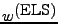
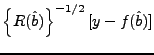

Although the residuals discussed in this section are calculated in the same way by SPK and NONMEM, this discussion is included here for completeness.
When the extended least squares objective function is being used
to perform individual level estimation,
SPK's model for the  value of an individual's data is
value of an individual's data is
| (1) |
| (2) |
Let the vector of residuals for the individual be defined as the
differences between their data and the expected values for their
data as predicted by the model,
| (3) |
| (4) |
| (5) |
The individual level residuals are calculated by evaluating the preceding quantities at the optimal values for the individuals' vectors of parameters that were determined during individual level estimation, i.e., by setting .
The following table lists the residual related quantities, their values as calculated by SPK, and their values as calculated by NONMEM. In this case, the NONMEM values are calculated using its standard individual estimation mode.
| Quantity | SPK Value | Description | Name | NONMEM Value |
| |
Predicted value for an individual's data. | IPRED = PRED | Same | |
|
|
Residuals for an individual. | IRES = RES | Same | |
|  |  | Weighted residuals for an individual. | IWRES = WRES | Same |